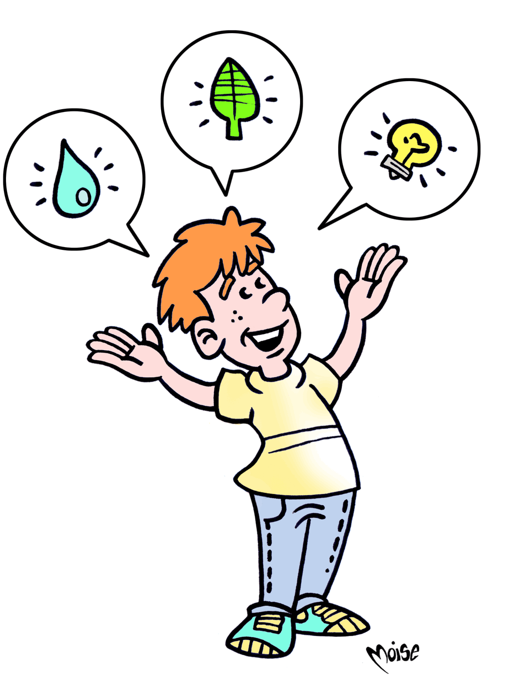

Low-consumption Citizens

We have now seen how much daily activities can be a burden to the environment and how
a few simple actions (like repairing a leak in the plumbing system, changing our consumption habits
and reducing, reusing and recycling waste) can all become fuel for sustainability. Our journey ends
with this final chapter, where you will find more advice to help you to be less “energivorous”
and, instead, become an eco-citizen!
The route that the citizen should follow in order to become ecological is
not a difficult one: it is fairly short, and it can also be… a game. Like
the one below: you must start at the word CITIZEN and reach the word ECOLOGICAL,
passing through a short chain of five words (GOOD, RESERVE, POINT, FELLOW and GAME)
that you’ll need to order according to an association of ideas. Have fun!